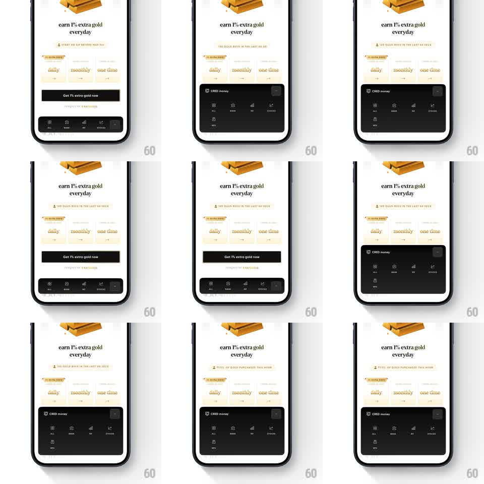

Media
Frame-by-frame

Rebuild this interaction 1:1: CRED money's expanding bottom tray - the dark nav bar at the bottom grows into a taller panel, revealing a second row of destinations, while the gold page above yields room.

Rebuild this interaction 1:1: CRED money's expanding bottom tray - the dark nav bar at the bottom grows into a taller panel, revealing a second row of destinations, while the gold page above yields room.
## Integration
Integration: stack-agnostic spec - springs given as stiffness/damping, timed motions as duration + curve; map every value to your framework and animation library of choice.
## Scene
CRED gold page, warm cream: gold-bar illustration, "earn 1% extra gold everyday" serif headline, a stat ticker, daily/monthly/one-time cards, and a black "Get 1% extra gold now" button. At the bottom: a dark "CRED money" tray - collapsed state shows one icon row (ALL, BANK, MF, STOCKS); expanded state reveals a taller panel with an added "MORE" row and a close affordance.
## Motion spec
Pattern: expanding bottom tray with staged row reveal.
- Drag the tray's handle up or tap it: the tray's height springs from pill to panel (spring ~320/20), corner radius tightening slightly as it grows.
- The first icon row stays pinned at the tray's top; the second row (MORE) fades up beneath it (translateY 12 -> 0, 200ms, 60ms into the expansion).
- Content above compresses gracefully: the CTA button slides up with the tray's edge 1:1 and the cards dim to 70% while the tray is open.
- Reverse on close: the second row fades first (120ms), then the tray collapses with the same spring; the CTA rides back down.
## Calibration
- The tray is a surface, not a modal - the page stays interactive and visible above it.
- Icons in the pinned row keep a subtle active-state fill; only the active destination's icon is lit.
## Reduced motion
Tray height animates 200ms linear; rows crossfade.
## Don't miss
- The tray's header ("CRED money" + close) stays fixed through the height change - no layout jump.
- The black CTA button and the dark tray are near-identical colors; the tray's top edge needs a hairline separator so they never visually merge.